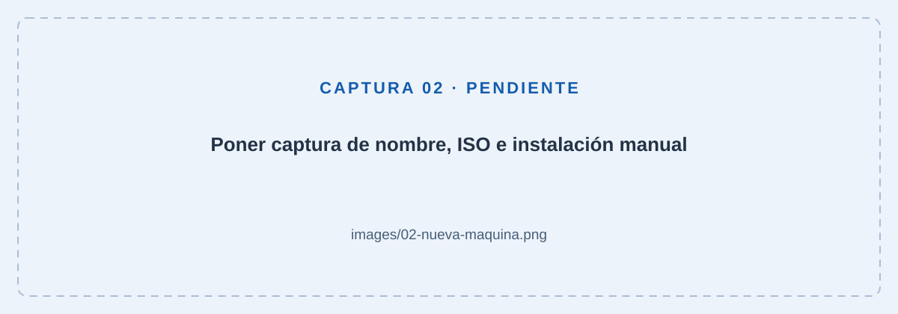
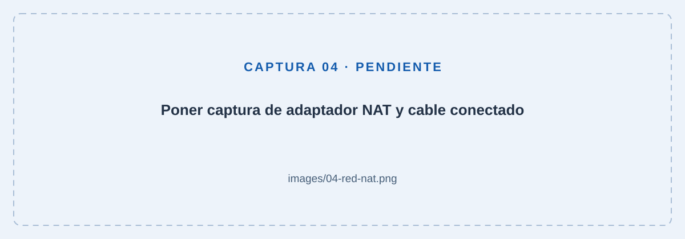
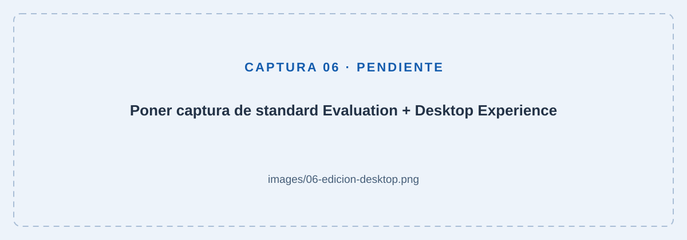
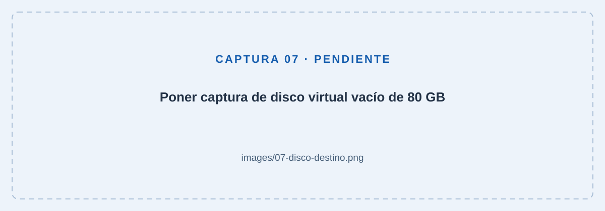
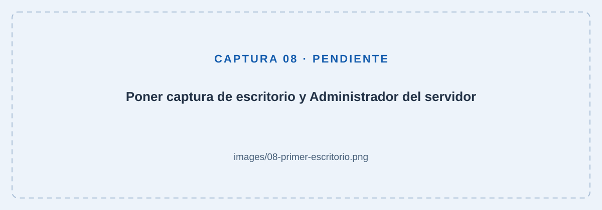
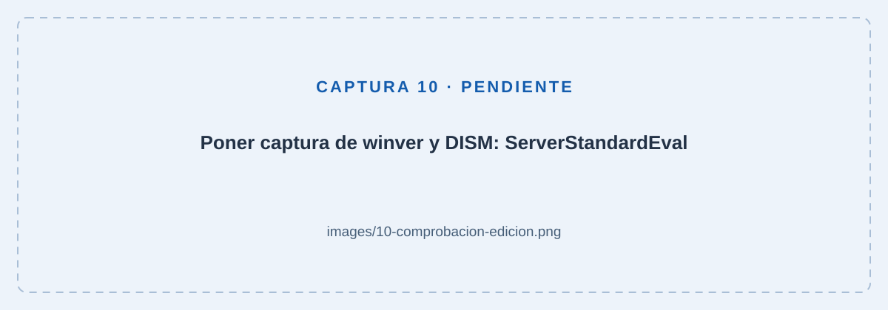

Windows Server 2025 en VirtualBox
01 · Antes de empezar
Prepara el equipo y las descargas
Esta práctica está pensada para un ordenador Intel o AMD de 64 bits, preferiblemente con 16 GB de RAM y al menos 80 GB libres. La ISO x64 de Windows Server no sirve como SO guest en un Mac con Apple Silicon ARM.
- Descarga (si no lo tienes aún) VirtualBox desde Oracle para tu sistema anfitrión. Ejecuta el instalador y acepta la instalación de sus componentes de red. La conexión puede interrumpirse brevemente. Reinicia si lo solicita y abre VirtualBox.
- Comprueba que la virtualización de hardware (Intel VT-x o AMD-V/SVM) está habilitada en la BIOS/UEFI. En un anfitrión Windows puedes ver su estado en Administrador de tareas → Rendimiento → CPU → Virtualización.
- Abre la página oficial de descargas de Windows Server 2025. En la fila Spanish, pulsa 64-bit edition en la columna ISO download. Si Microsoft solicita registro, completa el formulario. Guarda el archivo
.iso; no necesitas grabarlo en un USB ni descomprimirlo.
02 · El hardware virtual
Crea una máquina virtual nueva
Paso 1. Nombre, sistema e ISO
- Pulsa Nueva y escribe
WS2025-PRACTICA. Elige una carpeta del anfitrión con espacio suficiente. - Selecciona la ISO descargada. Revisa el tipo Microsoft Windows y la versión Windows Server 2025 (64-bit) si está disponible. Si no aparece, usa el perfil Windows 2022 (64-bit) o el perfil de Windows Server de 64 bits más cercano. El perfil configura el hardware; la edición real se elegirá dentro del instalador.
- Activa Omitir instalación desatendida (Skip Unattended Installation) o desmarca Instalación desatendida, según la versión. Queremos realizar el asistente de Windows manualmente.

Paso 2. Memoria, procesadores y disco
Usa esta configuración para la práctica. Son valores propuestos para la actividad, no una lista de mínimos oficiales. Deja recursos suficientes para el sistema anfitrión.
| Recurso | Valor propuesto |
|---|---|
| RAM | 4096 MB (4 GB). No asignes más RAM para esta práctica. |
| Procesadores | 2 CPU virtuales, sin superar los recursos disponibles. |
| Disco | Crear uno nuevo: VDI, 80 GB, reservado dinámicamente. |
| Firmware | EFI/UEFI activado antes de instalar; mantén el mismo modo después. |
| Red | Adaptador 1 habilitado, conectado a NAT y cable conectado. |
Un disco dinámico crece al guardar datos hasta su límite de 80 GB; no reserva todo ese espacio al crearlo. El espacio libre real del anfitrión sigue siendo necesario. Consulta los requisitos de hardware de Microsoft si el equipo es antiguo: Windows Server 2025 necesita, entre otras características, SSE4.2 y POPCNT.
- Asigna 4096 MB (4 GB) de RAM y 2 CPU virtuales, activa EFI si el asistente ofrece esa opción y crea el disco indicado. Si aparece Reservar tamaño completo, déjalo desmarcado para que sea dinámico.
- Finaliza el asistente. Con la VM apagada, abre Configuración → Sistema y revisa memoria, procesadores y EFI.
- En Almacenamiento, comprueba que aparecen el VDI nuevo y la ISO en la unidad óptica.
- En Red → Adaptador 1, selecciona NAT y comprueba Cable conectado. NAT permite salir a Internet a través del anfitrión; es suficiente para esta práctica.

03 · Instalación manual
Instala la edición correcta
Los nombres y el orden de algunas pantallas pueden variar según la ISO. La referencia es el asistente de instalación de Microsoft.
Paso 3. Arranca desde la ISO
Pulsa Iniciar. Si aparece Press any key to boot from CD or DVD…, haz clic dentro de la ventana y pulsa una tecla. Para liberar el ratón, utiliza la tecla anfitrión indicada en la barra inferior de VirtualBox (normalmente Ctrl derecho en Windows).
Paso 4. Idioma y teclado
Selecciona español, el formato regional que corresponda y tu distribución de teclado. Continúa con Siguiente. En el asistente nuevo, el teclado puede aparecer en una pantalla separada.
Paso 5. Inicia una instalación limpia
Elige Instalar Windows Server (o Instalar ahora). Si pide aceptar la eliminación de archivos, confirma solo tras verificar que estás trabajando en la VM nueva con su disco vacío. En asistentes que preguntan el tipo de instalación, elige Personalizada: instalar solo Windows Server.
Con la ISO Evaluation, normalmente no necesitas introducir una clave comercial. Si se solicita una, usa No tengo clave de producto cuando esté disponible. Si no puedes continuar, revisa que has descargado la ISO de evaluación correcta.
Paso 6. Standard Evaluation + Desktop Experience
Selecciona exactamente Windows Server 2025 Standard Evaluation (Desktop Experience). En español, el paréntesis puede indicar Experiencia de escritorio. Acepta los términos de licencia para continuar.

Paso 7. Selecciona el disco virtual
Elige el espacio sin asignar del disco 0, de aproximadamente 80 GB. Pulsa Siguiente para que Windows cree sus particiones. No necesitas crearlas manualmente. Si aparecen particiones con datos que no esperabas, vuelve a revisar el disco conectado a la VM antes de continuar.

Paso 8. Confirma y espera
Si aparece un resumen, revisa la edición y pulsa Instalar. Espera mientras copia archivos y se reinicia. En los siguientes arranques, no pulses ninguna tecla para volver a iniciar desde la ISO. Si vuelve al instalador, apaga la VM, retira la ISO de la unidad óptica virtual y vuelve a arrancar desde el disco.
Paso 9. Crea la contraseña de Administrador
Al finalizar, acepta los términos adicionales si aparecen y define una contraseña propia para Administrador (Administrator en inglés). Usa una contraseña larga con mayúsculas, minúsculas, números y símbolos; repítela y pulsa Finalizar. Comprueba la distribución del teclado si no coincide. No incluyas la contraseña en las capturas.
04 · Primer arranque
Entra y deja el servidor preparado
Paso 10. Inicia sesión
En el menú de la ventana de VirtualBox utiliza Entrada → Teclado → Insertar Ctrl+Alt+Supr. Inicia sesión como Administrador con tu contraseña. Completa la elección de datos de diagnóstico si aparece. Debes ver el escritorio; el Administrador del servidor suele abrirse automáticamente y también puedes buscarlo en Inicio.

Paso 11. Instala Guest Additions (recomendado)
Estas herramientas mejoran la integración del ratón y el ajuste de pantalla. Su funcionamiento depende de la versión de VirtualBox y sus controladores.
- En la ventana de la VM, elige Dispositivos → Insertar imagen de CD de las Guest Additions.
- Dentro del invitado, abre Explorador de archivos → Este equipo → Unidad de CD y ejecuta
VBoxWindowsAdditions.exe. - Acepta la elevación y los controladores de Oracle, completa el asistente y reinicia el invitado.
- Prueba a cambiar el tamaño de la ventana. Si no se adapta, revisa Ver → Redimensionar automáticamente la pantalla del invitado. Si el controlador falla, consulta la compatibilidad de tu versión; puedes continuar las comprobaciones con la resolución básica.
Paso 12. Actualiza y activa la evaluación
Comprueba la fecha y la zona horaria en Configuración → Hora e idioma. Después, abre Configuración → Windows Update, busca actualizaciones e instálalas. Reinicia cuando lo pida y vuelve a buscar hasta que no queden actualizaciones importantes pendientes.
Con conexión a Internet, revisa Configuración → Sistema → Activación. Si sigue pendiente, abre PowerShell como administrador dentro de la VM y ejecuta:
slmgr /atoEspera el mensaje de resultado. Si falla, anota el código y revisa la red y la hora antes de repetir. La activación de la evaluación no la convierte en una licencia permanente.
05 · Pequeñas comprobaciones
¿Está todo funcionando?
Abre Inicio → Windows PowerShell → Ejecutar como administrador dentro del servidor. Ejecuta cada bloque por separado y compara lo que obtienes. Las direcciones IP y el nombre del equipo pueden variar.
1. Edición y escritorio
winver
DISM /online /Get-CurrentEditionEsperado: Windows Server 2025 en la ventana de versión y ServerStandardEval en DISM. Poder usar Inicio, el Explorador y el escritorio confirma la interfaz gráfica. DISM por sí solo no distingue Desktop Experience de Core.
2. Memoria y almacenamiento
Get-CimInstance Win32_ComputerSystem | Select-Object TotalPhysicalMemory, NumberOfLogicalProcessors
Get-Volume -DriveLetter C | Select-Object DriveLetter, Size, SizeRemainingEsperado: aproximadamente 4 GB de RAM (el comando muestra bytes), 2 procesadores lógicos y espacio libre en C:. El volumen C: tendrá algo menos de 80 GB por las particiones del sistema.
3. Configuración de red
ipconfig /allEsperado: adaptador Ethernet con IPv4, puerta de enlace y DNS. En el NAT predeterminado de VirtualBox suele aparecer una IPv4 como 10.0.2.15 y puerta de enlace 10.0.2.2. Una dirección 169.254.x.x indica que no ha obtenido una concesión DHCP válida.
4. DNS y acceso a Internet
Resolve-DnsName www.microsoft.com
Test-NetConnection www.microsoft.com -Port 443Esperado: el primer comando devuelve registros DNS; el segundo muestra TcpTestSucceeded : True. Si falla, comprueba NAT, cable conectado y la conexión del anfitrión. Que un ping falle no demuestra por sí solo que Internet esté caído: algunos equipos bloquean ICMP.
5. Evaluación activada
slmgr /xprEsperado: una ventana con la fecha de caducidad de la activación de evaluación. Es normal que no sea permanente. Si indica un estado de notificación o falta de activación, vuelve al paso 12.

6. Arranque independiente y punto de partida
- Apaga desde Inicio → Encendido → Apagar. Si pregunta el motivo, selecciona uno acorde al apagado de la práctica.
- Con la VM apagada, ve a Configuración → Almacenamiento y retira el disco de la unidad óptica virtual. Conserva el VDI conectado.
- Arranca de nuevo. Debe llegar al inicio de sesión sin la ISO. Entra y comprueba que abre el escritorio.
- Apaga correctamente otra vez. En la vista Instantáneas de VirtualBox, toma una llamada
01-instalacion-limpia, con una descripción de la configuración y la fecha.
La instantánea permite volver a este estado para futuras prácticas. No sustituye una copia de seguridad ni amplía el periodo de evaluación.
Lista final
Marca solo lo que hayas comprobado. Estas marcas son temporales y se restablecen al recargar la página.
06 · Si algo no encaja
Problemas habituales
No arranca la VM o no aparecen opciones de 64 bits
Comprueba VT-x/AMD-V en el firmware, la arquitectura del anfitrión y la versión de VirtualBox. Anota el mensaje exacto. Si menciona un hipervisor o una función de seguridad del anfitrión, consulta la documentación de Oracle antes de cambiar esa configuración.
Aparece «No bootable medium» o una consola EFI
Apaga la VM y revisa que la ISO está montada en la unidad óptica virtual. Durante la instalación, arranca desde ella. Después, conserva el disco VDI y el mismo modo EFI utilizado al instalar.
Solo veo una consola o SConfig
Probablemente elegiste Server Core. Si instalaste Core, crea de nuevo la instalación de la práctica y selecciona Standard Evaluation con Desktop Experience. No se añade el escritorio instalando Guest Additions.
El instalador vuelve a empezar tras reiniciar
No pulses una tecla en el aviso de arranque desde CD/DVD después de la primera vez. Si sigue ocurriendo, retira la ISO y arranca desde el disco virtual donde ya se ha instalado Windows.
No funciona Internet
Comprueba primero Internet en el anfitrión. Con la VM apagada, verifica Adaptador 1, NAT y Cable conectado. En el invitado, deja IPv4 y DNS automáticos para esta práctica y repite las pruebas. No hace falta desactivar el firewall.
La máquina va muy lenta o la pantalla no se ajusta
Comprueba que el anfitrión no se ha quedado sin RAM ni espacio. Ajusta los recursos con la VM apagada. Para la pantalla, revisa Guest Additions y el ajuste automático del invitado. Las actualizaciones iniciales pueden consumir bastante CPU y disco.